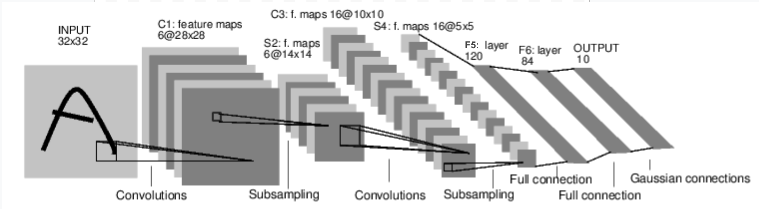

Training LeNet with Constrained Convolution Kernels
Contents
%matplotlib inline
Training LeNet with Constrained Convolution Kernels#
In this part, we consider to train LeNet with constrained convolution kernals.

It is a simple feed-forward network. It takes the input, feeds it
through several layers one after the other, and then finally gives the
output. Such network can be constructed using the layers from torch.nn and cdopt.utils_torch.nn.
A typical training procedure for a neural network with constraints is as follows:
Define the neural network that has some learnable parameters (or weights), combined with layers from
cdopt.utils_torch.nnandtorch.nn.Define the loss function that evaluates how far is the output from being correct.
Design the traning and test processes.
Load dataset and set configs to the training process.
Train the neural network by optimizers from
torch.optim
This project may require the matplotlib and tqdm packages. You can install them through pip.
Importing modules#
We first import all the necessary modules for training LeNet.
import torch
import torch.nn as nn
import torch.nn.functional as F
import cdopt
from cdopt.nn.modules import Linear_cdopt, Conv2d_cdopt
from cdopt.manifold_torch import stiefel_torch
Warning: cannot import backbone_jax. Possibly JAX is not installed.
Warning: Cannot import JAX-related components. Please check whether JAX is correctly installed.
Define the structure of the network#
class Net(nn.Module):
def __init__(self):
super(Net, self).__init__()
# 1 input image channel, 6 output channels, 5x5 square convolution
# kernel, the `manifold_class` can be chosen as any manifold class provided in `cdopt.manifold_torch`
self.conv1 = Conv2d_cdopt(1, 6, 5, manifold_class=stiefel_torch)
self.conv2 = Conv2d_cdopt(6, 16, 5, manifold_class=stiefel_torch)
# an affine operation: y = Wx + b
self.fc1 = nn.Linear(256, 120) # 5*5 from image dimension
self.fc2 = nn.Linear(120, 84)
self.fc3 = nn.Linear(84, 10)
def forward(self, x):
# Max pooling over a (2, 2) window
x = F.max_pool2d(F.relu(self.conv1(x)), (2, 2))
# If the size is a square, you can specify with a single number
x = F.max_pool2d(F.relu(self.conv2(x)), 2)
x = torch.flatten(x, 1) # flatten all dimensions except the batch dimension
x = F.relu(self.fc1(x))
x = F.relu(self.fc2(x))
x = self.fc3(x)
x = F.log_softmax(x, dim=1)
return x
net = Net()
print(net)
Net(
(conv1): Conv2d_cdopt(1, 6, kernel_size=(5, 5), stride=(1, 1))
(conv2): Conv2d_cdopt(6, 16, kernel_size=(5, 5), stride=(1, 1))
(fc1): Linear(in_features=256, out_features=120, bias=True)
(fc2): Linear(in_features=120, out_features=84, bias=True)
(fc3): Linear(in_features=84, out_features=10, bias=True)
)
Training the Network#
Then we define the training and testing process of the network.
def train(args, model, device, train_loader, optimizer, epoch):
model.train()
for batch_idx, (data, target) in enumerate(train_loader):
data, target = data.to(device), target.to(device)
optimizer.zero_grad()
output = model(data)
loss = F.nll_loss(output, target) + 0.05* (model.conv1.quad_penalty() + model.conv2.quad_penalty())
loss.backward()
optimizer.step()
if batch_idx % args.log_interval == 0:
print('Train Epoch: {} [{}/{} ({:.0f}%)]\tLoss: {:.6f}'.format(
epoch, batch_idx * len(data), len(train_loader.dataset),
100. * batch_idx / len(train_loader), loss.item()))
def test(model, device, test_loader):
model.eval()
test_loss = 0
correct = 0
with torch.no_grad():
for data, target in test_loader:
data, target = data.to(device), target.to(device)
output = model(data)
test_loss += F.nll_loss(output, target, reduction='sum').item() # sum up batch loss
pred = output.argmax(dim=1, keepdim=True) # get the index of the max log-probability
correct += pred.eq(target.view_as(pred)).sum().item()
test_loss /= len(test_loader.dataset)
print('\nTest set: Average loss: {:.4f}, Accuracy: {}/{} ({:.0f}%)\n'.format(
test_loss, correct, len(test_loader.dataset),
100. * correct / len(test_loader.dataset)))
Set parameters and options#
class ARGS():
pass
args = ARGS()
args.batch_size = 64
args.test_batch_size = 1000
args.epochs = 5
args.lr = 0.5 # learning rate
args.gamma = 0.7 # weight-decay parameter
args.no_cuda = False # whether use cuda
args.seed = 1 # random seed for traning
args.log_interval = 200 # the interval to print trainning information
args.save_model = False # whether to save the model
import torch.optim as optim
from torch.optim.lr_scheduler import StepLR
from torchvision import datasets, transforms
use_cuda = not args.no_cuda and torch.cuda.is_available()
torch.manual_seed(args.seed)
device = torch.device("cuda")
train_kwargs = {'batch_size': args.batch_size}
test_kwargs = {'batch_size': args.test_batch_size}
if use_cuda:
cuda_kwargs = {'num_workers': 1,
'pin_memory': True,
'shuffle': True}
train_kwargs.update(cuda_kwargs)
test_kwargs.update(cuda_kwargs)
transform=transforms.Compose([
transforms.ToTensor(),
transforms.Normalize((0.1307,), (0.3081,))
])
dataset1 = datasets.MNIST('../data', train=True, download=True,
transform=transform)
dataset2 = datasets.MNIST('../data', train=False,
transform=transform)
train_loader = torch.utils.data.DataLoader(dataset1,**train_kwargs)
test_loader = torch.utils.data.DataLoader(dataset2, **test_kwargs)
model = Net().to(device)
optimizer = optim.Adadelta(model.parameters(), lr=args.lr)
scheduler = StepLR(optimizer, step_size=1, gamma=args.gamma)
for epoch in range(1, args.epochs + 1):
train(args, model, device, train_loader, optimizer, epoch)
test(model, device, test_loader)
scheduler.step()
if args.save_model:
torch.save(model.state_dict(), "mnist_cnn.pt")
Train Epoch: 1 [0/60000 (0%)] Loss: 2.323425
Train Epoch: 1 [12800/60000 (21%)] Loss: 0.337492
Train Epoch: 1 [25600/60000 (43%)] Loss: 0.173824
Train Epoch: 1 [38400/60000 (64%)] Loss: 0.047076
Train Epoch: 1 [51200/60000 (85%)] Loss: 0.142316
Test set: Average loss: 0.0612, Accuracy: 9793/10000 (98%)
Train Epoch: 2 [0/60000 (0%)] Loss: 0.077553
Train Epoch: 2 [12800/60000 (21%)] Loss: 0.018011
Train Epoch: 2 [25600/60000 (43%)] Loss: 0.019138
Train Epoch: 2 [38400/60000 (64%)] Loss: 0.028631
Train Epoch: 2 [51200/60000 (85%)] Loss: 0.152057
Test set: Average loss: 0.0469, Accuracy: 9830/10000 (98%)
Train Epoch: 3 [0/60000 (0%)] Loss: 0.012290
Train Epoch: 3 [12800/60000 (21%)] Loss: 0.030673
Train Epoch: 3 [25600/60000 (43%)] Loss: 0.008544
Train Epoch: 3 [38400/60000 (64%)] Loss: 0.012734
Train Epoch: 3 [51200/60000 (85%)] Loss: 0.011106
Test set: Average loss: 0.0363, Accuracy: 9889/10000 (99%)
Train Epoch: 4 [0/60000 (0%)] Loss: 0.004471
Train Epoch: 4 [12800/60000 (21%)] Loss: 0.051616
Train Epoch: 4 [25600/60000 (43%)] Loss: 0.017461
Train Epoch: 4 [38400/60000 (64%)] Loss: 0.137033
Train Epoch: 4 [51200/60000 (85%)] Loss: 0.098844
Test set: Average loss: 0.0329, Accuracy: 9904/10000 (99%)
Train Epoch: 5 [0/60000 (0%)] Loss: 0.020107
Train Epoch: 5 [12800/60000 (21%)] Loss: 0.026760
Train Epoch: 5 [25600/60000 (43%)] Loss: 0.120611
Train Epoch: 5 [38400/60000 (64%)] Loss: 0.004775
Train Epoch: 5 [51200/60000 (85%)] Loss: 0.081922
Test set: Average loss: 0.0325, Accuracy: 9902/10000 (99%)
[model.conv1.quad_penalty(), model.conv2.quad_penalty()]
[tensor(7.8502e-05, device='cuda:0', grad_fn=<SumBackward0>),
tensor(0.0003, device='cuda:0', grad_fn=<SumBackward0>)]
Reference#
Hu X, Xiao N, Liu X, et al. A Constraint Dissolving Approach for Nonsmooth Optimization over the Stiefel Manifold[J]. arXiv preprint arXiv:2205.10500, 2022.